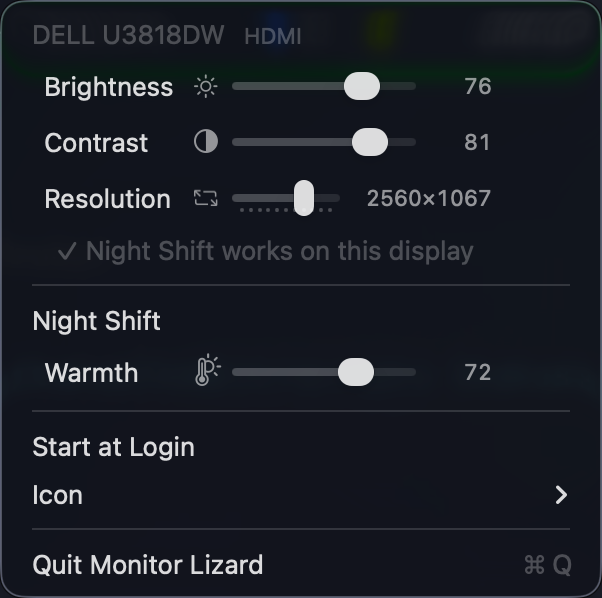

A small macOS menu-bar app that controls your external monitor from one dropdown: brightness, contrast, resolution and Night Shift. Nothing else.
What you get

One section per display, then Night Shift for the whole Mac:
| Row | What it does |
|---|---|
| Brightness | Sets the monitor's own backlight over DDC/CI, like pressing its front buttons. Also works for the built-in screen. |
| Contrast | Same, for contrast. |
| Resolution | Drag through the sharp HiDPI "looks like" sizes. The ▸ submenu lists every mode. |
| Night Shift | Toggle it, and set the warmth. |
| ✓ / ⏳ / ✗ line | Whether Night Shift works on that display. See below. |
Sliders apply live as you drag. Nothing is polled on a timer, and nothing you set is stored by the app: the monitor keeps its own brightness and macOS keeps the rest.
Why Night Shift may be off on your monitor
macOS turns Night Shift off on any display it thinks is a television, and it thinks that about plenty of ordinary monitors plugged in over HDMI. Monitor Lizard spots that, asks for your password once, and writes a small override telling macOS the display is a monitor. Unplug and replug the display (or reboot) and Night Shift works on it from then on. The app does not need to be running for the fix to hold.
The icon

The mascot, shrunk to the menu bar: a gecko hugging the monitor, head peering over the top corner, paws on the bezel, tail curling up over the screen. The screen fills with blue as your main display gets brighter, turns amber while Night Shift is on, and the gecko flicks its tongue when a slider change lands on the monitor. Prefer a plain meter? menu ▸ Icon offers Arc, Gauge, Pie or Wedge instead.
Install
Requires macOS 14 or later on Apple Silicon.
git clone https://github.com/nicholaspsmith/StatusItemKit ../StatusItemKit
git clone https://github.com/nicholaspsmith/monitor-lizard-menubar
cd monitor-lizard-menubar
./install.sh
That builds Monitor Lizard.app, links it into ~/Applications and launches
it. Turn on Start at Login from the menu if you want it to stay.
Quit BetterDisplay, MonitorControl or any other DDC tool first. Two apps talking to one monitor at the same time interfere with each other.
How it works
- Brightness and contrast go over DDC/CI through
IOAVService, the private IOKit interface every Apple Silicon DDC tool uses. One serial queue per display, every read confirmed by checksum. - Built-in screen brightness uses DisplayServices.
- Night Shift uses CoreBrightness.
- The "is this a TV?" flag comes from CoreDisplay, the same source
system_profilerreads. - The TV fix is a plist at
/Library/Displays/Contents/Resources/Overrides/DisplayVendorID-<hex>/DisplayProductID-<hex>containingDisplayIsTV = false. macOS reads it when the display attaches.
The app never touches gamma tables.